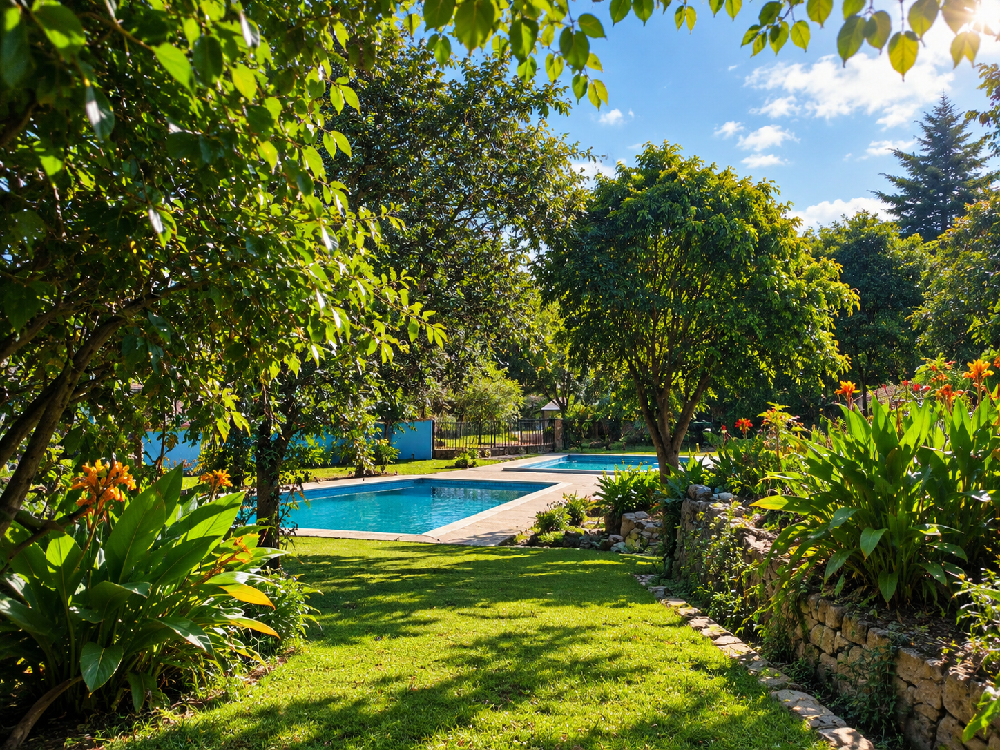
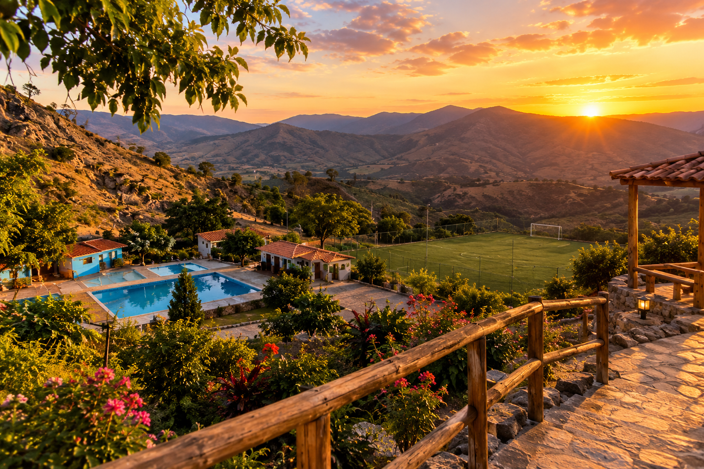

Relajación esencial
Aguas Termales Templadas
Pozas rústicas integradas al paisaje con agua templada continua, ideales para nadar con calma o flotar sin prisa.
Ver servicios
Turismo de Bienestar en Huamachuco · La Libertad
Aguas termales templadas, pozas rústicas de piedra y aire puro andino. Un refugio consciente en el corazón de los Andes para desconectar del ruido y renovar tu energía.
Experiencias Destacadas
Tres formas distintas de disfrutar del agua templada andina y conectar con el descanso.
Pozas rústicas integradas al paisaje con agua templada continua, ideales para nadar con calma o flotar sin prisa.
Ver servicios
Espacios reservados para parejas o familias pequeñas, rodeados de vegetación andina y máxima serenidad.
Ver tarifas
Un sendero suave que conduce a una vista panorámica de las montañas de Huamachuco para contemplar el atardecer.
Ver miradorGalería Fotográfica
Haz clic en cualquiera de las fotografías para verlas en tamaño ampliado.
Pausa Consciente
Nuestra propuesta de turismo de bienestar se sostiene en tres pilares que respetan el ritmo de la montaña.
Desacelera el ritmo diario y contempla el entorno sin presiones de tiempo.
Preservamos el flujo de agua andina con arquitectura de piedra local.
Atención cálida, transparente y respetuosa con cada persona y familia.